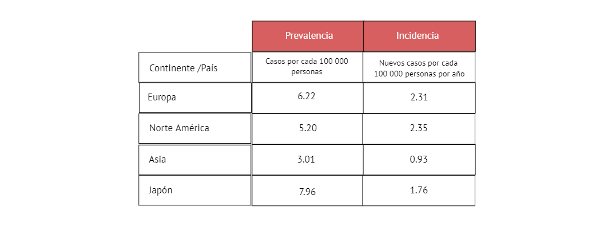

Los estudios de la epidemiología de la ELA son numerosos y las tasas de incidencia y prevalencia varían ampliamente [ 1 ] . Según un estudio realizado en el 2020 por Brown, a nivel mundial, las tasas de prevalencia e incidencia se resumen de la siguiente forma de acuerdo a cada región: [ 2 ]
De acuerdo a lo obtenido, las tasas de prevalencia e incidencia generalmente son más altas en Europa y América del Norte que en Asia y América Latina [ 3 ] . Asimismo, los estudios incluidos informaron que la tasa de incidencia de la ELA alcanzó su punto máximo entre las edades de 60 y 75 años. [ 1 ]
En América Latina, los estudios son escasos y desactualizados. Específicamente en el Perú, no existe un registro exacto de los pacientes con ELA; no obstante, la Asociación ELA PERÚ reúne y registra, sin fines de lucro, a cierto número de pacientes con esta patología.
Según la asociación ELA Perú, actualmente existen 160 pacientes que padecen de ELA que se encuentran registrados en su base de datos. Sin embargo, un considerable número de pacientes o familiares que llegan a contactarse con ellos suelen desertar, por lo que no se encuentran en el registro a la fecha. Esto complica el tener un registro exacto de pacientes con ELA en el país. Además, debido a que la esperanza de vida de los pacientes es de 2-4 años desde el inicio de la enfermedad y que sólo el 5-10% de los pacientes sobreviven más de 10 años [ 4 ] , muchos pacientes registrados tienden también a fallecer, por lo que las cifras son variables cada año.
En el 2015, el MINSA, en colaboración con la sociedad civil, elaboró el Reglamento de la Ley Nº 29698 y el "Plan Nacional de las Enfermedades Raras o Huérfanas 2016-2021" el cual permitirá garantizar el derecho de acceso a los servicios de salud; así como la gestión de promoción, prevención, diagnóstico, tratamiento integral y rehabilitación para pacientes que padecen de enfermedades raras o huérfanas. [ 5 ]
En Alemania, tras una revisión sistemática de 20 estudios internacionales, se concluyó que los costes nacionales de la esclerosis lateral amiotrófica variaron entre 149 millones de euros y 1329 millones de euros. [ 6 ]
En España, el coste total por paciente destinado únicamente a la esclerosis Lateral amiotrófica es de 44,483 € y el coste total que invierte España, aunque existen pocos estudios que midan el impacto económico de la ELA, se ha calculado que el coste por paciente se acerca igualmente a los 50.000 € anuales. [ 7 ]
Una revisión internacional, en el año 2016, muestra evidencia el elevado coste total anual que supone cada paciente con ELA a nivel internacional, el cual alcanza los 69.475 $ en los Estados Unidos, 59.018 $ en España, 47.092 $ en Alemania, 21,732 $ en los Países Bajos y 11,251 $ en Grecia. [ 7 ]
En el 2018, se realizó un estudio en base a las ERH, enfermedades que provocan un grado severo de discapacidad crónica o muerte, de las cuales no hay muchos datos clínicos por su prevalencia definida como menor a 5 en 10 000 habitantes. Sin embargo, el porcentaje de personas con enfermedades huérfanas hacen entre 5 a 7 % de la población mundial que, trasladado al Perú, serían entre 1.5 a 2 millones de pacientes afectados. Cabe mencionar que, la palabra "huérfana" se menciona porque no se ha obtenido la suficiente información médica ya que no se tiene un tratamiento absoluto o cura. [ 8 ]
Cabe resaltar que, la ELA, al ser una enfermedad huérfana que afecta aproximadamente al 7% de la población mundial, implica que el acceso tanto a medicina como a terapias para el tratamiento son altamente costosas, con un costo total de 15 mil soles a 18 mil soles desde el momento de ser diagnosticados, ya que el precio por una resonancia nuclear magnética es de 400 soles aproximadamente. [ 9 ]
Este año ,las medidas para mejorar el sistema de salud y atender la Emergencia Sanitaria mantienen a la salud como prioridad, con S/ 20,991 millones, lo cual representa un crecimiento de 13.5% respecto a 2020; S/ 2,213 millones serán destinados al Seguro Integral de salud [ 10 ] . Además, en 2019 el Minsa financió a más de 42 mil personas con enfermedades raras, huérfanas y de alto costo mediante FISSAL que es una unidad ejecutora del Seguro Integral de Salud que cubre enfermedades raras o huérfanas (ERH). [ 11 ]
La Organización Mundial de la Salud (OMS) estima que mil millones de personas en todo el mundo necesitan tecnología de asistencia (TA). Sin embargo, solo 1 de cada 10 personas tiene acceso a los productos de apoyo que necesitan [ 12 ] . Una consecuencia irremediable de la ELA es la pérdida del habla debido a debilitamiento muscular, esto no solo impide al paciente llevar una vida sana, independiente y digna, acceder al empleo, educación o participar en la sociedad, sino también afecta su autoestima y estado emocional. Es por ello que el principal problema encontrado es la incapacidad de comunicación de pacientes con ELA con déficit de habla en el Perú.
Chiò A, Logroscino G, Traynor BJ, Collins J, Simeone JC, Goldstein LA, et al. Global Epidemiology of Amyotrophic Lateral Sclerosis: A Systematic Review of the Published Literature. Neuroepidemiology [Internet]. 2013 [citado 2021 8 Sep];41(2):118–30. Disponible en: https://www.karger.com/Article/FullText/351153#ref1
Brown CA, Lally C, Kupelian V, Flanders WD. Estimated Prevalence and Incidence of Amyotrophic Lateral Sclerosis and SOD1 and C9orf72 Genetic Variants. Neuroepidemiology [Internet]. 2021 Jul 9;1–12. Disponible en: https://www.karger.com/Article/Pdf/516752
Brown CA, Lally C, Kupelian V, Flanders WD. Estimated Prevalence and Incidence of Amyotrophic Lateral Sclerosis and SOD1 and C9orf72 Genetic Variants. Neuroepidemiology [Internet]. 2021 Jul 9 [citado 2021 9 Sep];1–12. Disponible en: https://www.karger.com/Article/FullText/516752?ref=1#ref1
Chiò A, Logroscino G, Hardiman O, Swingler R, Mitchell D, Beghi E, et al. Prognostic factors in ALS: A critical review. Amyotrophic Lateral Sclerosis [Internet]. 2009 Jan [citado 2021 9 Sep];10(5-6):310–23. Disponible en: https://www.ncbi.nlm.nih.gov/pmc/articles/PMC3515205/
Enfermedades Raras y Huérfanas [Internet]. Minsa.gob.pe. 2011 [citado 2021 9 Sep]. Disponible en: https://www.minsa.gob.pe/erh/
Achtert K, Kerkemeyer L. The economic burden of amyotrophic lateral sclerosis: a systematic review [Internet]. 2021 [citado 2021 7 Sep]. Disponible en: https://pubmed.ncbi.nlm.nih.gov/34143346/
La ELA : una realidad ignorada [Internet]. España: Fundación Luzón; 2017 [citado 2021 6 Sep]. Disponible en: https://ffluzon.org/wp-content/uploads/2019/12/LaELA-una-realidad-ignorada.pdf
Lizaraso Caparó Frank, Fujita Ricardo. Enfermedades Raras o Huérfanas, en Perú más huérfanas que raras. Horiz. Med. [Internet]. 2018 Abr [citado 2021 Sep 7] ; 18( 2 ): 4-5. Disponible en: http://www.scielo.org.pe/scielo.php?script=sci_arttext&pid=S1727-558X2018000200001&lng=es
[Internet]. Hnhu.gob.pe. 2019 [citado 2021 5 Sep].Disponible en: http://www.hnhu.gob.pe/Inicio/wp-content/uploads/2016/03/Tarifario-2019.pdf
Minsa financió a más de 42 mil personas con enfermedades raras, huérfanas y de alto costo [Internet]. Gob.pe. 2019 [citado 2021 6 Sep]. Disponible en: https://www.gob.pe/institucion/minsa/noticias/49122-minsa-financio-a-mas-de-42-mil-personas-con-enfermedades-raras-huerfanas-y-de-alto-costo
Pousada T, Garabal-Barbeira J, Martínez C, Groba B, Nieto-Riveiro L, Pereira J. How Loan Bank of Assistive Technology Impacts on Life of Persons with Amyotrophic Lateral Sclerosis and Neuromuscular Diseases: A Collaborative Initiative. International Journal of Environmental Research and Public Health [Internet]. 2021 Jan 18 [cited 2021 Sep 18];18(2):763. Disponible en: https://www.ncbi.nlm.nih.gov/pmc/articles/PMC7830315/